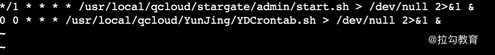
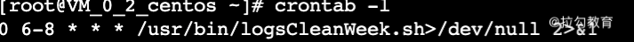

- 00 开篇词：选择 ZooKeeper，一步到位掌握分布式开发.md.html
- 01 ZooKeeper 数据模型：节点的特性与应用.md.html
- 02 发布订阅模式：如何使用 Watch 机制实现分布式通知.md.html
- 03 ACL 权限控制：如何避免未经授权的访问？.md.html
- 04 ZooKeeper 如何进行序列化？.md.html
- 05 深入分析 Jute 的底层实现原理.md.html
- 06 ZooKeeper 的网络通信协议详解.md.html
- 07 单机模式：服务器如何从初始化到对外提供服务？.md.html
- 08 集群模式：服务器如何从初始化到对外提供服务？.md.html
- 09 创建会话：避开日常开发的那些“坑”.md.html
- 10 ClientCnxn：客户端核心工作类工作原理解析.md.html
- 11 分桶策略：如何实现高效的会话管理？.md.html
- 12 服务端是如何处理一次会话请求的？.md.html
- 13 Curator：如何降低 ZooKeeper 使用的复杂性？.md.html
- 14 Leader 选举：如何保证分布式数据的一致性？.md.html
- 15 ZooKeeper 究竟是怎么选中 Leader 的？.md.html
- 16 ZooKeeper 集群中 Leader 与 Follower 的数据同步策略.md.html
- 17 集群中 Leader 的作用：事务的请求处理与调度分析.md.html
- 18 集群中 Follow 的作用：非事务请求的处理与 Leader 的选举分析.md.html
- 19 Observer 的作用与 Follow 有哪些不同？.md.html
- 20 一个运行中的 ZooKeeper 服务会产生哪些数据和文件？.md.html
- 21 ZooKeeper 分布式锁：实现和原理解析.md.html
- 22 基于 ZooKeeper 命名服务的应用：分布式 ID 生成器.md.html
- 23 使用 ZooKeeper 实现负载均衡服务器功能.md.html
- 24 ZooKeeper 在 Kafka 和 Dubbo 中的工业级实现案例分析.md.html
- 25 如何搭建一个高可用的 ZooKeeper 生产环境？.md.html
- 26 JConsole 与四字母命令：如何监控服务器上 ZooKeeper 的运行状态？.md.html
- 27 crontab 与 PurgeTxnLog：线上系统日志清理的最佳时间和方式.md.html
- 28 彻底掌握二阶段提交三阶段提交算法原理.md.html
- 29 ZAB 协议算法：崩溃恢复和消息广播.md.html
- 30 ZAB 与 Paxos 算法的联系与区别.md.html
- 31 ZooKeeper 中二阶段提交算法的实现分析.md.html
- 32 ZooKeeper 数据存储底层实现解析.md.html
- 33 结束语 分布技术发展与 ZooKeeper 应用前景.md.html
27 crontab 与 PurgeTxnLog：线上系统日志清理的最佳时间和方式
本节课，我们主要学习对线上 ZooKeeper 服务器日志进行维护的操作，主要维护方式是备份和清理。几乎所有的生产系统都会产生日志文件，用来记录服务的运行状态，在服务发生异常的时候，可以用来作为分析问题原因的依据。ZooKeeper 作为分布式系统下的重要组件，在分布式网络中会处理大量的客户端请求，因此也会产生大量的日志文件，对这些问题的维护关系到整个 ZooKeeper 服务的运行质量。接下来我们就来学习如何维护这些日志文件。
日志类型
首先，我们先来介绍线上生产环境中的 ZooKeeper 集群在对外提供服务的过程中，都会产生哪些日志类型。我们在之前的课程中也介绍过了，在 ZooKeeper 服务运行的时候，一般会产生数据快照和日志文件，数据快照用于集群服务中的数据同步，而数据日志则记录了 ZooKeeper 服务运行的相关状态信息。其中，数据日志是我们在生产环境中需要定期维护和管理的文件。
清理方案
如上面所介绍的，面对生产系统中产生的日志，一般的维护操作是备份和清理。备份是为了之后对系统的运行情况进行排查和优化，而清理主要因为随着系统日志的增加，日志会逐渐占用系统的存储空间，如果一直不进行清理，可能耗尽系统的磁盘存储空间，并最终影响服务的运行。但在实际工作中，我们不能 24 小时监控系统日志情况，因此这里我们介绍一种定时任务，可以自动清理和备份 ZooKeeper 服务运行产生的相关日志。
清理工具
corntab
首先，我们介绍的是 Linux corntab ，它是 Linux 系统下的软件，可以自动地按照我们设定的时间，周期性地执行我们编写的相关脚本。下面我们就用它来写一个定时任务，实现每周定期清理 ZooKeeper 服务日志。
创建脚本
我们通过 Linux 系统下的 Vim 文本编辑器，来创建一个叫作 “ logsCleanWeek ” 的定时脚本，该脚本是一个 shell 格式的可执行文件。如下面的代码所示，我们在 usr/bin/ 文件夹下创建该文件，该脚本的主要内容是设定 ZooKeeper 快照和数据日志的对应文件夹路径，并通过 shell 脚本和管道和 find 命令 查询对应的日志下的日志文件，这里我们保留最新的 10 条数据日志，其余的全部清理。
#!/bin/bash
dataDir=/home/zk/zk_data/version-2
dataLogDir=/home/zk/zk_log/version-2
ls -t $dataLogDir/log.* | tail -n +$count | xargs rm -f
ls -t $dataDir/snapshot.* | tail -n +$count | xargs rm -f
ls -t $logDir/zookeeper.log.* | tail -n +$count | xargs rm -f
find /home/home/zk/zk_data/version-2 -name "snap*" -mtime +1 | xargs rm -f
find /home/home/zk/zk_data/version-2 -name "snap*" -mtime +1 | xargs rm -f
find /home/home/zk/zk_data/logs/ -name "zookeeper.log.*" -mtime +1 | xargs rm –f
创建定时任务
创建完定时脚本后，我们接下来就利用 corntab 来设置脚本的启动时间，如下面的代码所示。corntab 命令的语法比较简单，其中 -u 表示设定指定的用户，因为 Linux 系统是一个多用户操作系统，而 crontab 的本质就是根据使用系统的用户来设定程序执行的时间计划表。因此当命令的执行者具有管理员 root 账号的权限时，可以通过 -u 为特定用户设定某一个程序的具体执行时间。
crontab [ -u user ] { -l | -r | -e }
接下来我们打开系统的控制台，并输入 crontab -e 命令，开启定时任务的编辑功能。如下图所示，系统会显示出当前已有的定时任务列表。整个 crontab 界面的操作逻辑和 Vim 相同，为了新建一个定时任务，我们首先将光标移动到文件的最后一行，并敲击 i 键来开启编辑模式。

这个 crontab 定时脚本由两部分组成，第一部分是定时时间，第二部分是要执行的脚本。如下代码所示，脚本的执行时间是按照 f1 分、 f2 小时、f3 日、f4 月、f5 一个星期中的第几天这种固定顺序格式编写的。
f1 f2 f3 f4 f5 program
当对应的时间位上为 * 时，表示每间隔一段时间都要执行。例如，当 f1 分上设定的是 * 时，表示每分钟都要执行对应的脚本。而如果我们想在每天的特定时间执行对应的脚本，则可以通过在对应的时间位置设定一个时间段实现，以下代码所演示的就是将脚本清理时间设定为每天早上的 6 点到 8 点。
0 6-8 * * * /usr/bin/logsCleanWeek.sh>/dev/null 2>&1
查看定时任务
当我们设定完定时任务后，就可以打开控制台，并输入 crontab -l 命令查询系统当前的定时任务。

到目前为止我们就完成了用 crontab 创建定时任务来自动清理和维护 ZooKeeper 服务产生的相关日志和数据的过程。
crontab 定时脚本的方式相对灵活，可以按照我们的业务需求来设置处理日志的维护方式，比如这里我们希望定期清除 ZooKeeper 服务运行的日志，而不想清除数据快照的文件，则可以通过脚本设置，达到只对数据日志文件进行清理的目的。
PurgeTxnLog
除了上面所介绍的，通过编写 crontab 脚本定时清理 ZooKeeper 服务的相关日志外， ZooKeeper 自身还提供了 PurgeTxnLog 工具类，用来清理 snapshot 数据快照文件和系统日志。
PurgeTxnLog 清理方式和我们上面介绍的方式十分相似，也是通过定时脚本执行任务，唯一的不同是，上面提到在编写日志清除 logsCleanWeek 的时候 ，我们使用的是原生 shell 脚本自己手动编写的数据日志清理逻辑，而使用 PurgeTxnLog 则可以在编写清除脚本的时候调用 ZooKeeper 为我们提供的工具类完成日志清理工作。
如下面的代码所示，首先，我们在 /usr/bin 目录下创建一个 PurgeLogsClean 脚本。注意这里的脚本也是一个 shell 文件。在脚本中我们只需要编写 PurgeTxnLog 类的调用程序，系统就会自动通过 PurgeTxnLog 工具类为我们完成对应日志文件的清理工作。
#!/bin/sh
java -cp "$CLASSPATH" org.apache.zookeeper.server.PurgeTxnLog
echo "清理完成"
PurgeTxnLog 方式与 crontab 相比，使用起来更加容易而且也更加稳定安全，不过 crontab 方式更加灵活，我们可以根据不同的业务需求编写自己的清理逻辑。
结束
本节课我们介绍了线上 ZooKeeper 服务日志和数据快照的清理和维护工作，可以通过 crontab 和 PurgeTxnLog 两种方式实现。这两种方式唯一的不同在清理日志脚本的实现方式上，crontab 是通过我们自己手动编写的 shell 脚本实现的，在执行上需要考虑脚本权限相关的问题，而 PurgeTxnLog 则是 ZooKeeper 提供的专门用来处理日志清除相关的工具类，使用起来更加容易，开发人员不用考虑底层的实现细节。这里希望你结合自身工作中的生产环境来选择一种适合自己的 ZooKeeper 数据维护方式。